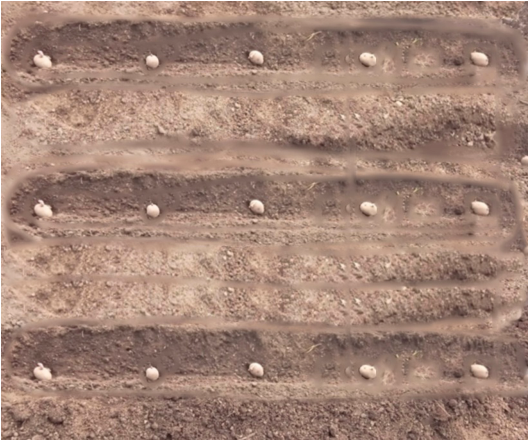

Agriculture for Secondary Schools
multiple crops per year. Planting during the long rainy season (Masika) typically
begins with the onset of rains in March or April, while planting during the short
rainy season (Vuli) is done in November or December. The recommended spacing
for a round potato is 70 cm between rows/ridges and 30 cm between plants (70 cm
×30 cm).
Procedure for planting
(i) Open farrows 10-15cm deep at the spacing of 70 cm between furrows;
(ii) Apply the recommended planting fertiliser in furrows;
(iii) Cover the fertiliser with a thin layer of soil;
(iv) Place a selected seed potato in a furrow with sprouting buds up at a spacing
of 30 cm between plants;
(v) Cover the seed potato with the remaining soil; then,
(vi) Irrigate the field if the soil is not wet.
Abiding with the recommended spacing is essential to ensure sufficient space for
growth and simplify weeding, fertiliser, and pesticide application. For optimal
production, the ridge method of planting is recommended. For a 35-45 mm seed
size, you will need 2000-2500 kg of seed potatoes per hectare. High yields of
round potatoes are achieved through effective agricultural practices, such as
using quality, disease-free seeds that are 3 to 5 months old. Figure 5.3 shows
seed round potatoes placed in furrows.
Figure 5.3: Seed round potatoes placed in furrows
74
Student’s Book Form Two